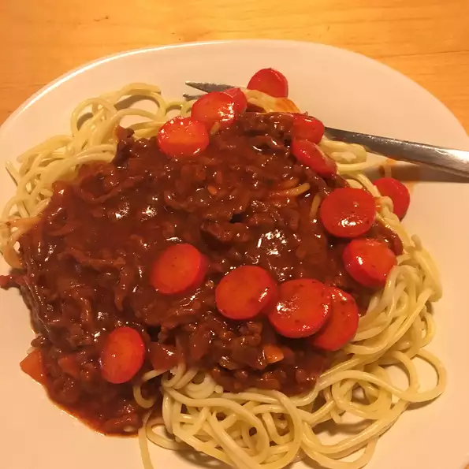

Filipino Spaghetti

Description
A twist on the original italian spaghetti created via sweet banana ketchup and meaty sausages. Try something new and different with a homemade Filipino pasta
Ingredients
- 2 pounds spaghetti
- 1 tbsp vegetable oil
- 1 head garlic, minced
- 1 onion chopped
- 1 pound ground beef
- 1 pound ground pork
- salt and pepper to taste
- 1 can spaghetti sauce
- 1 jar banana ketchup
- 1/4 cup white sugar
- 1/2 cup water
- 1 pound hotdogs
- 1/2 cup shredded cheese
Steps
- Fill a large pot with lightly salted water and bring to a rolling boil over high heat. Once the water is boiling, stir in the spaghetti, and return to a boil. Cook the pasta uncovered, stirring occasionally, until the pasta has cooked through, but is still firm to the bite, about 12 minutes. Drain well in a colander set in the sink.
- Heat the vegetable oil in a skillet over medium heat. Stir in the garlic and onion; cook and stir until the onion has softened and turned translucent, about 5 minutes. Stir in the beef and pork; season with salt and pepper. Cook and stir until the meat has browned. Pour in the spaghetti sauce, banana ketchup, sugar, and water. Simmer until the sauce has thickened, about 15 minutes. Stir in hot dog slices and continue to cook until hot dogs are heated through. Serve over spaghetti with Cheddar cheese sprinkled on top.